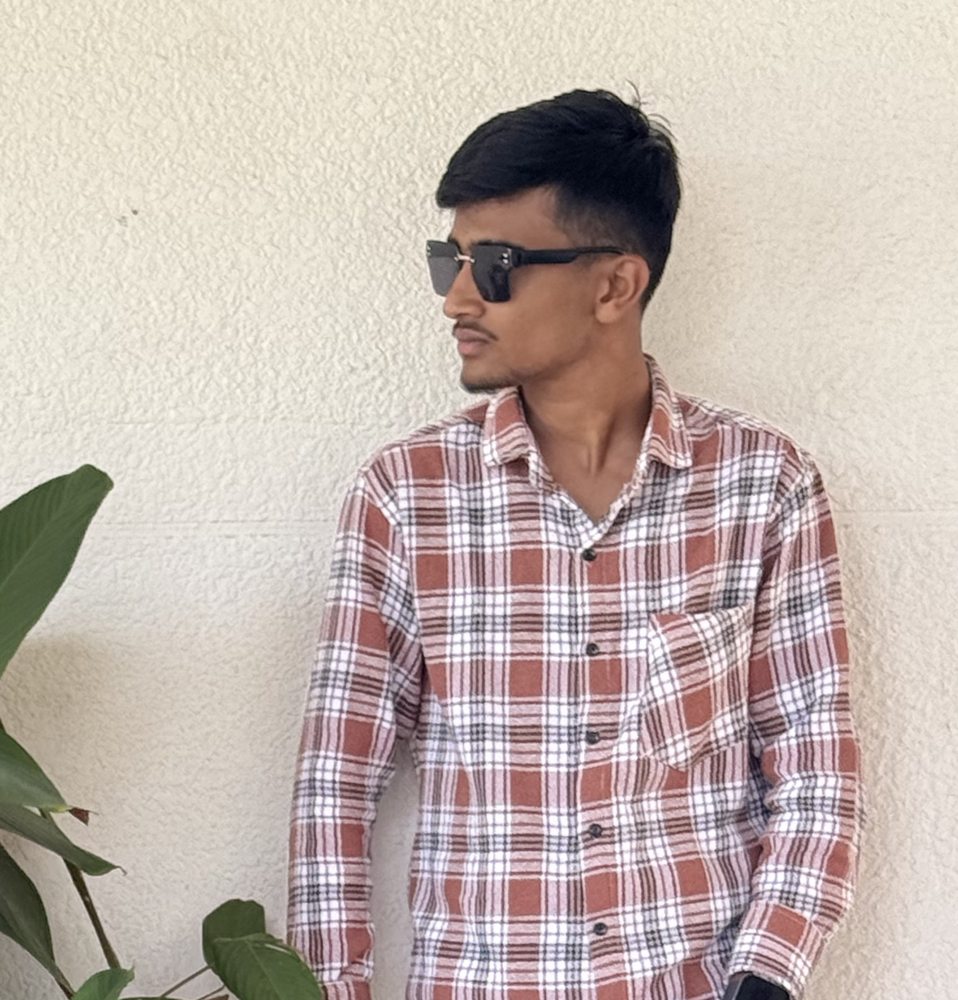

Welcome to my space -where ideas turn into work.

I’m Abdul Ameen, a second-year BCA student at Parivarthana Business School,
affiliated with the University of Mysore.I’m passionate about web development, with
a particular interest in backend development and the systems that make websites
work behind the scenes.
For me, learning to code is more than memorizing syntax or following tutorials.
I want to understand how each part works, why it works, and how to use it to
build something of my own. I enjoy turning what I learn into practical projects,
solving problems along the way, and improving my approach with every new challenge.
I’m currently preparing for a future in backend development while strengthening my
knowledge of web technologies and programming. I’m curious about how applications
handle data, connect different components, and deliver useful experiences to people.
Each project gives me a chance to explore these ideas and grow as a developer.
I’m always interested in gaining more knowledge and exploring new technologies.
I see every new concept as an opportunity to ask questions, experiment, and
discover what I can create. My goal is to keep building, keep learning, and
become a developer who understands the technology behind the work—not just how
to use it.